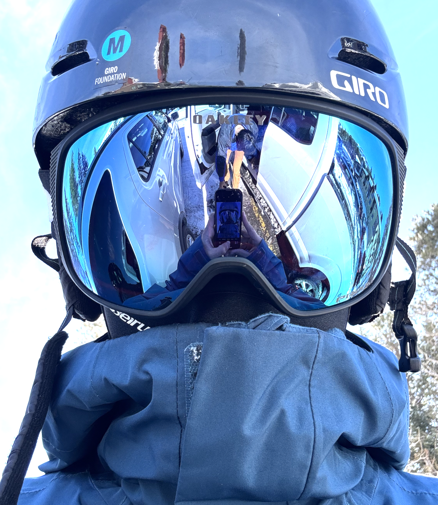

About Me
Hello! I'm [Your Name], a Computer Science PhD student at [Your University]. My research interests include [Your Research Interests, e.g., machine learning, artificial intelligence, human-computer interaction, etc.].
My journey into computer science began with a fascination for how simple algorithms can solve complex problems. Over the years, I've become especially interested in the intersection of theory and real-world applications, striving to bridge the gap between abstract concepts and practical solutions. I enjoy exploring new paradigms in artificial intelligence, and I'm always eager to learn about emerging technologies that have the potential to reshape our world.
In my research, I focus on developing interpretable machine learning models that can be applied to domains such as healthcare and education. I believe that transparency and ethical considerations are crucial as we integrate AI into more aspects of society. My work often involves collaborating with interdisciplinary teams, which has taught me the value of diverse perspectives and creative problem-solving.
Outside of academia, I am passionate about teaching and mentoring. I regularly volunteer at local coding bootcamps and enjoy helping others discover the excitement of programming. When I'm not at my desk, you can find me hiking, experimenting with new recipes in the kitchen, or playing the piano. I also love traveling and experiencing different cultures, which inspires much of my creative thinking.
If you're interested in my work or would like to collaborate, please feel free to reach out. You can find my CV here. [Link to your CV PDF]